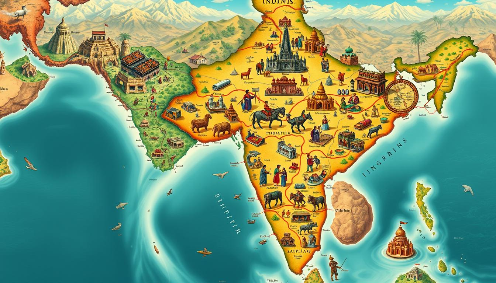
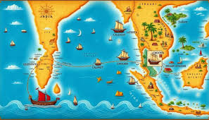

These routes and geographical features facilitated the exchange of goods, ideas, and cultures between India and the rest of the world, shaping the country's history and identity.
Ancient India was a hub of attraction for travelers from various parts of the world, drawn by its:
1. Spiritual Significance:
India was a major center for spirituality, philosophy, and religion, attracting seekers of truth and enlightenment from far-off lands.
2. Rich Culture and Heritage:
India's vibrant culture, architecture, art, and literature fascinated travelers, who came to experience the diversity and richness of Indian civilization.
3. Economic Opportunities:
India's strategic location on the Silk Road and its extensive trade networks made it an attractive destination for merchants, traders, and entrepreneurs.
4. Knowledge and Learning:
India was renowned for its ancient universities, such as Nalanda and Taxila, which drew scholars and students from across the world to study subjects like philosophy, astronomy, mathematics, and medicine.
5. Natural Wonders:
India's diverse geography, from the Himalayas to the Indian Ocean, attracted travelers who sought to explore its natural wonders, such as the Ganges River, the Taj Mahal, and the caves of Ajanta and Ellora
Some notable examples of travelers who visited India from various parts of the world include:
chinese Travelers:
Buddhist monks like Xuanzang (7th century CE) and Faxian (5th century CE) traveled to India to study Buddhism and collect sacred texts.
2. Greek and Roman Travelers:
Historians like Megasthenes (3rd century BCE) and traders like Hippalus (1st century CE) visited India, documenting its culture, politics, and economy.
3. Arab and Persian Travelers:
Scholars like Al-Biruni (11th century CE) and Ibn Battuta (14th century CE) traveled to India, studying its culture, science, and philosophy.
<4. European Travelers:>
Explorers like Vasco da Gama (15th century CE) and traders like the Portuguese, Dutch, French, and British established trade routes and colonies in India, leading to increased cultural exchange and travel.
These travelers contributed significantly to the cultural, economic, and intellectual exchange between India and the rest of the world, shaping the country's history and identity.



Ananya. Nalamwar
Ancient India was a hub of attraction for travelers from various parts of the world, drawn by its:
Some notable examples of travelers who visited India from various parts of the world include:
These travelers contributed significantly to the cultural, economic, and intellectual exchange between India and the rest of the world, shaping the country's history and identity.